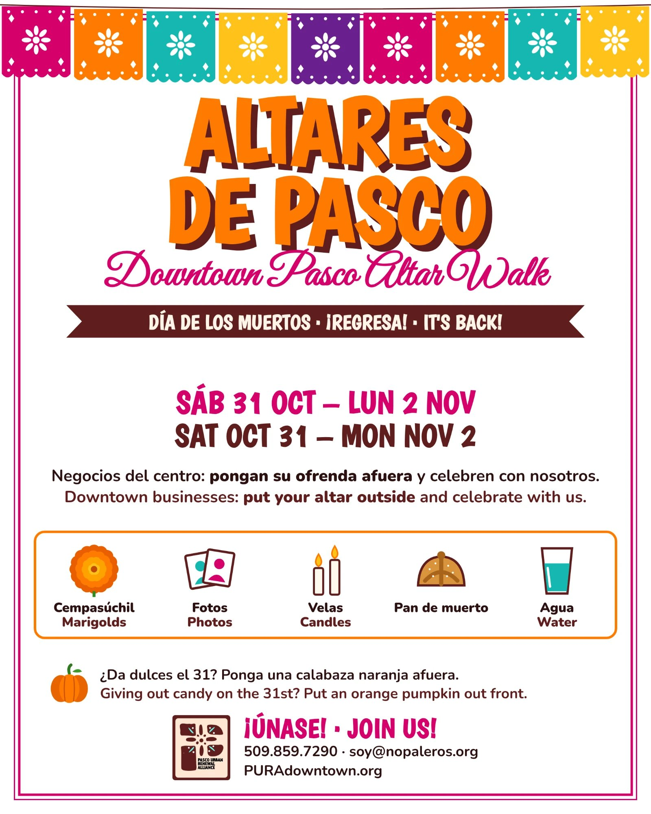

¿Qué es Altares de Pasco?What is Altares de Pasco?
Negocios del centro: pongan su ofrenda afuera y celebren con nosotros. Del 31 de octubre al 2 de noviembre, el centro de Pasco se llena de altares para que toda la comunidad camine, recuerde y celebre a quienes ya se nos adelantaron.
Downtown businesses: put your altar outside and celebrate with us. From October 31 to November 2, Downtown Pasco fills with ofrendas so the whole community can walk, remember, and celebrate the loved ones who came before us.
Para negocios del centroFor downtown businesses
- Avísenos que participa.Let us know you're joining.
- Ponga su ofrenda afuera del 31 de octubre al 2 de noviembre.Put your altar outside Oct 31 – Nov 2.
- Celebre con nosotros y reciba a los visitantes.Celebrate with us and welcome the walkers.
Para la comunidadFor the community
- Camine por el centro de Pasco y visite los altares.Stroll Downtown Pasco and visit the altars.
- Venga con su familia.Bring the whole family.
- Apoye a los negocios locales que participan.Support the local businesses taking part.
Elementos de la ofrendaWhat goes on an ofrenda
CempasúchilMarigolds
FotosPhotos
VelasCandles
Pan de muerto
AguaWater
¿Da dulces el 31? Ponga una calabaza naranja afuera.
Giving out candy on the 31st? Put an orange pumpkin out front.

Comparta el volanteShare the flyer
Descárguelo, imprímalo para su ventana o compártalo en redes.
Download it, print it for your window, or share it on social.